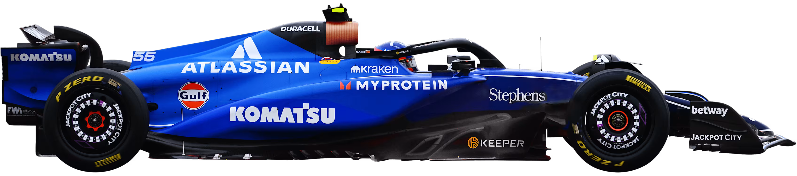
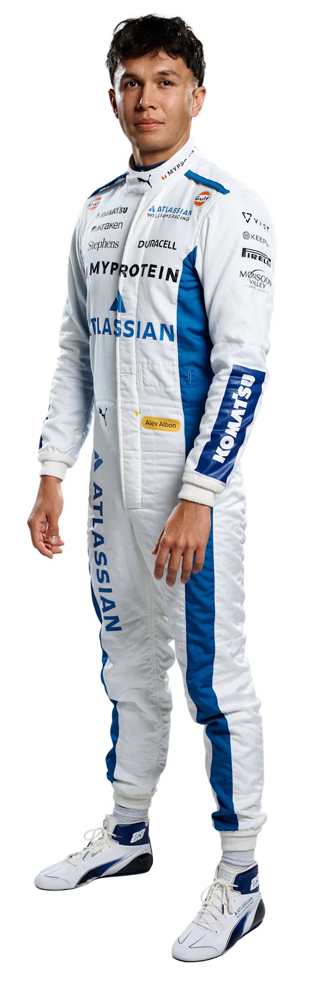
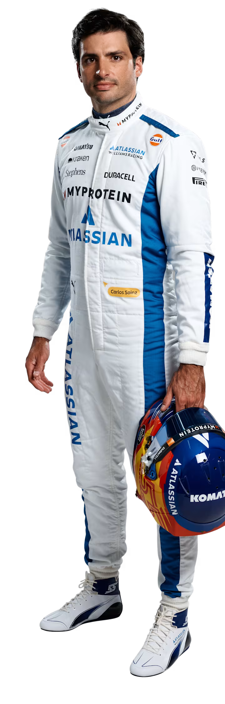

Impulsionada pelo génio e pela paixão do falecido Sir Frank Williams, a Williams cresceu de origens humildes para se tornar um gigante da Fórmula 1, rivalizada apenas por Ferrari e McLaren em termos de sucesso duradouro. Nas últimas quatro décadas, a equipa acumulou vitórias em Grandes Prémios e títulos de campeonato, ao mesmo tempo que ajudou a formar alguns dos maiores talentos do desporto, dentro e fora do cockpit. E, após a decisão da família Williams de se afastar após a venda da equipa à Dorilton Capital em 2020, uma nova era começou...